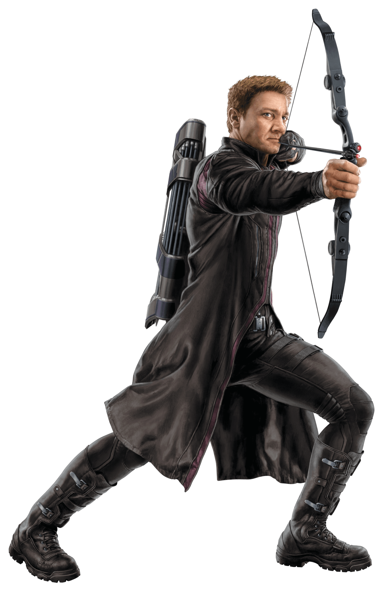
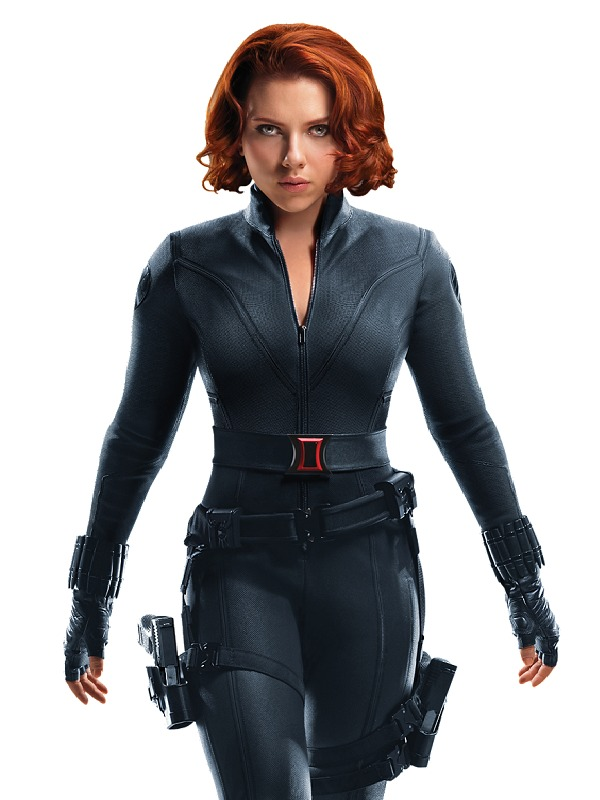
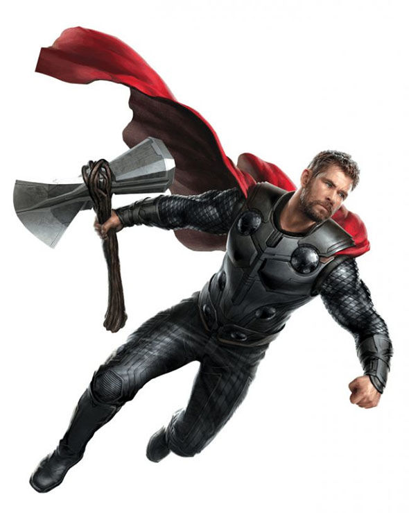
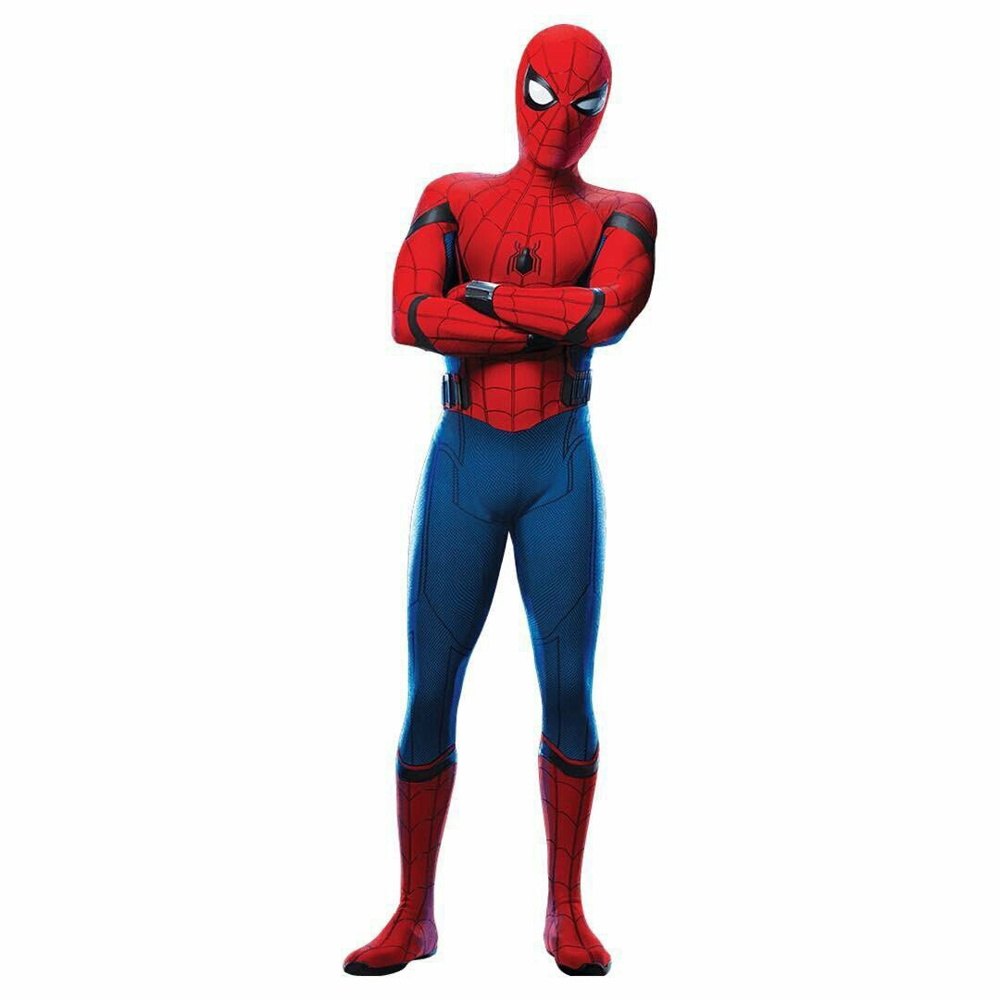

|  | Ojo de Halcón ha sido miembro activo de los Vengadores durante años, con sus habilidades de arquero aumentando los poderes superhumanos de sus socios. Durante un breve tiempo, Barton abandonó su identidad de Ojo de Halcón y, tomando el suero del crecimiento de Henry Pym, operó bajo el nombre de Goliath. |
|  | Natasha nació en Stalingrado (ahora Volgogrado), Rusia. La primera y más conocida Viuda Negra, es una agente rusa entrenada como espía, artista marcial y francotiradora, y equipada con un arsenal de armas de alta tecnología, que incluye un par de armas energéticas montadas en la muñeca y apodada "Piquete de la Viuda". |
|  | Thor es el hijo de Odín, señor de los dioses de Asgard, y de Jord, que también es conocida como Gea, la más anciana diosa de la Tierra. Odín quería ser padre de un hijo cuyo poder derivase de la Tierra y de Asgard, así que se apareó con Jord. Odín creó una cueva en Noruega donde Jord dio a luz a Thor. |
|  | El joven Peter Parker fue mordido por una araña radioactiva en la escuela secundaria, la mordedura de la araña lo llevó a desarrollar habilidades similares a las del arácnido. Peter gano así la fuerza, la velocidad, y la habilidad de trepar por las paredes más un extraordinario sentido que le avisaba del peligro inminente. A la trágicamente muerte de su tío Ben, Peter iniciaría su lucha contra el mal como el Asombroso Hombre Araña. |